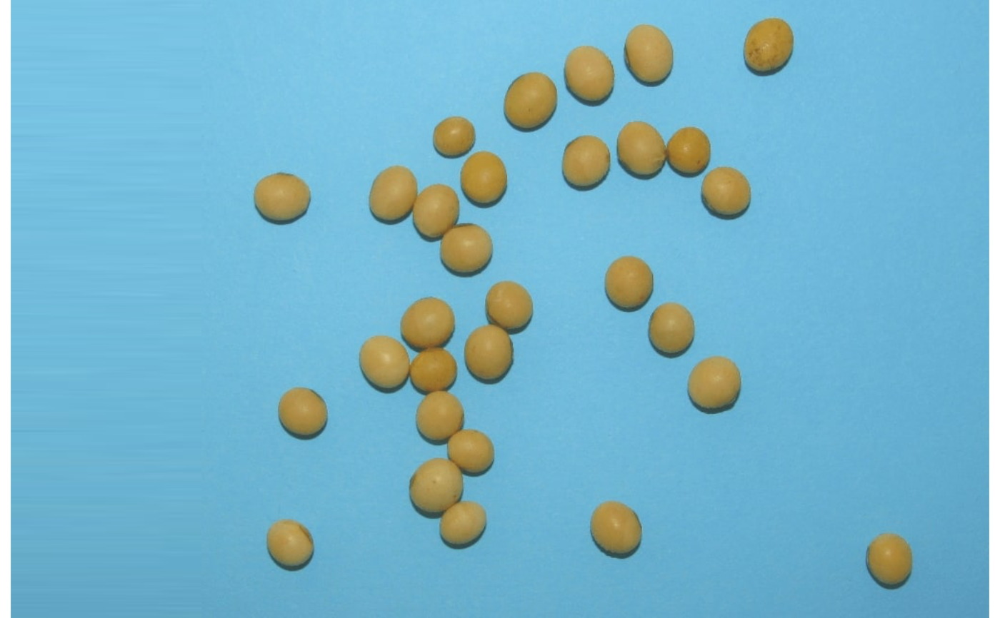
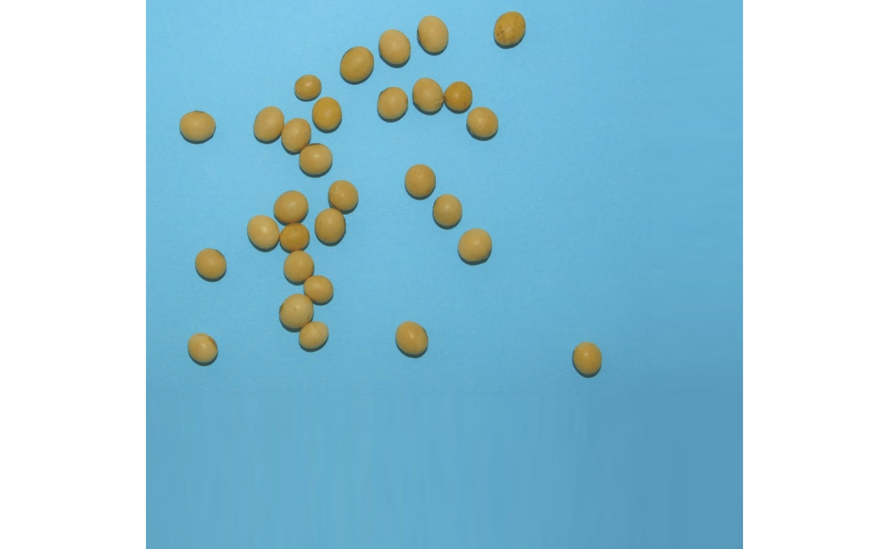

Expands an image towards the left, top, right, or bottom by sampling pixels from the image edge. Users can choose how many pixels (rows or columns) are sampled and how many pixels the expansion will have.
Usage
image_expand(
img,
left = NULL,
top = NULL,
right = NULL,
bottom = NULL,
edge = NULL,
sample_left = 10,
sample_top = 10,
sample_right = 10,
sample_bottom = 10,
random = FALSE,
filter = NULL,
plot = TRUE
)Arguments
- img
An
Imageobject.- left, top, right, bottom
The number of pixels to expand in the left, top, right, and bottom directions, respectively.
- edge
The number of pixels to expand in all directions. This can be used to avoid calling all the above arguments
- sample_left, sample_top, sample_right, sample_bottom
The number of pixels to sample from each side. Defaults to 20.
- random
Randomly sampling of the edge's pixels? Defaults to
FALSE.- filter
Apply a median filter in the sampled pixels? Defaults to
FALSE.- plot
Plots the extended image? defaults to
FALSE.
Examples
library(pliman)
img <- image_pliman("soybean_touch.jpg")
image_expand(img, left = 200)

image_expand(img, right = 150, bottom = 250, filter = 5)
